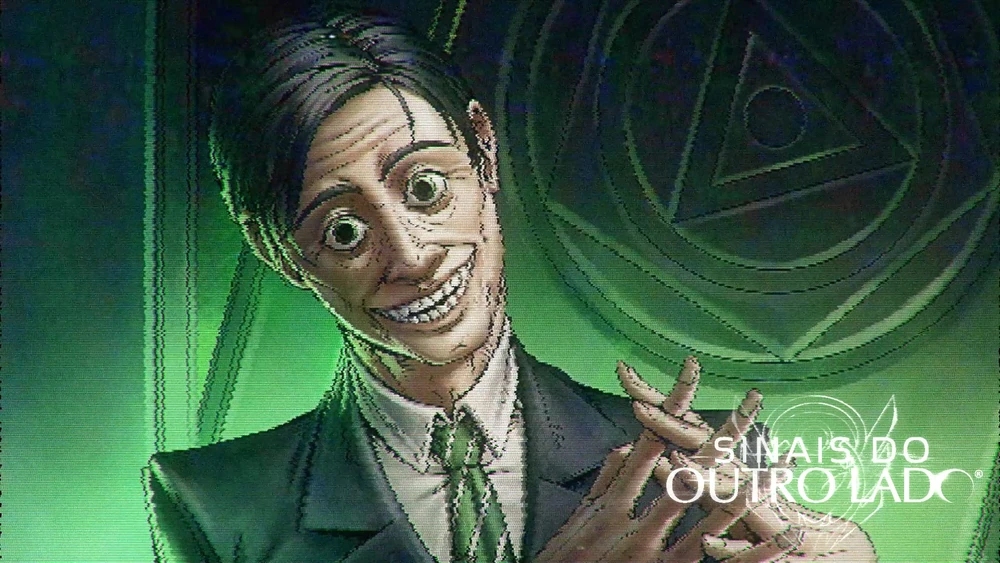

Sinais do Outro Lado é a segunda campanha spin-off da série Ordem Paranormal. É uma campanha de RPG de mesa baseada no Sistema de Ordem Paranormal. Mestrada pelo streamer, diretor criativo e roteirista de Enigma do Medo, Cellbit, é protagonizada por Alexandre, Chico Albuquerque, Dara Venturini, Guilherme Santos e Lirio Tellini.
A campanha foi anunciada no dia 20 de agosto de 2022, no final de Revelando o Segredo na Ilha na Twitch do Cellbit, tendo sua data anunciada em 22 de outubro de 2022.[2] Essa foi a segunda campanha spin-off das três anunciadas, tendo história e personagens diferentes da história principal de Ordem Paranormal.
A temporada teve um total de 7 episódios, transmitidos às 18h na Twitch do Cellbit. Além disso, o programa Transcendendo fez seu breve retorno, continuando a ser apresentado por Leo Santi.
O paranormal não vem para a nossa realidade de maneira fácil, mas as coisas nem sempre foram assim. O ano de 1997 é palco de vários casos de desaparecimento no sul de Minas Gerais, em uma granja localizada na cidade de Varminho. O grupo "Os Cinco", formado por Alexandre, Chico Albuquerque, Dara Venturini, Guizo e Lírio Tellini, investiga o desaparecimento de seu mentor, Morato Vertaler, um caçador paranormal que tem inúmeras pesquisas sobre os Alheios, criaturas misteriosas e perigosas. Porém, algo ou alguém mais poderoso e desconhecido pode estar por trás de tudo isso.
O líder e mentor de um grupo de jovens acaba desaparecendo, deixando rastros de pesquisas sobre criaturas aparentemente alienígenas conhecidas como Alheios. Seus rastros acabam levando seus discípulos ao local onde desapareceu, onde eles devem ficar atentos a tudo em seu redor para poderem entender o que está acontecendo e como lidar com a presença paranormal na cidade.
Os Cinco enfrentam o seu primeiro Alheio na Granja Abobrinha. Suas investigações passam desde o filho recluso da família Magal Benza até o trio de um acampamento do outro lado do lago, que traz informações interessantes para resolverem seus problemas.

Os Cinco enfrentam um novo Alheio em sua aventura para encontrar Morato. Porém, novas dessas criaturas entram no caminho do grupo, e o tempo traz de volta memórias de um antigo amigo.
O sinal está cada vez mais forte. Os Cinco continuam sua investigação e batalha contra o Memoflígico e suas ilusões de Voytek. E o futuro reserva um perigo complexo para o grupo enfrentar enquanto encurralados.
Os Quatro, após um evento totalmente bizarro, continuam a investigar sobre os Alheios. E uma ajuda paranormal, vinda de alguém muito famoso, chega ao grupo para poder possibilitar que encontrem Dara e Morato.
O chamado ecoa mais forte. Xande, Chico, Guizo e Lírio finalmente chegam no coração do problema: a Torre da TV Varminho. E os perigos dessa torre de transmissão prometem complicar seus objetivos de salvar Dara e Morato.
Chegou a hora. Chico, Guizo, Lírio, Xande e Morato começam a última fase da investigação da Torre da TV Varminho e o resgate de Dara. Mas as coisas talvez não sejam tão simples assim, e o objetivo do ser que encabeça tudo pode ser uma escolha muito difícil para o grupo tomar.